|
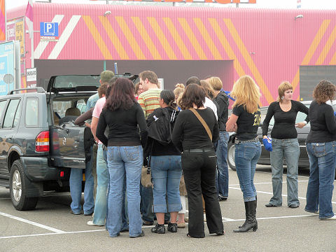
Het bekende verzamelpunt voor de medewerkers.
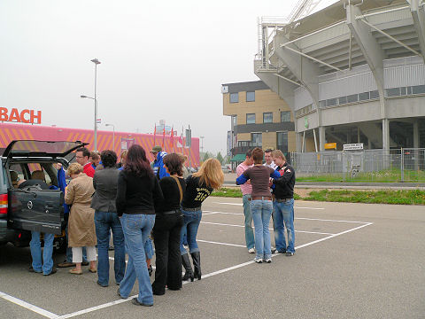
Even naar het PLS loeren.
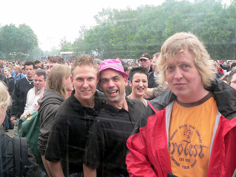
Nauwelijks gesetteld ontwaren we reeds vier bekende Rodafans: twee vrolijke
Hanebretboys alsmede popverslaggever
Marco.
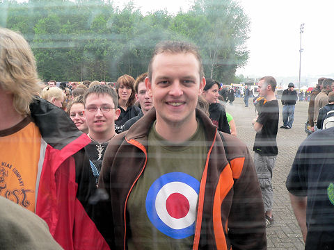
Nummer vier, Patrick W. krijgt een eigen foto. Het is erg gemakkelijk
scherpstellen
voor de camera op iemand met zo'n shirtje.
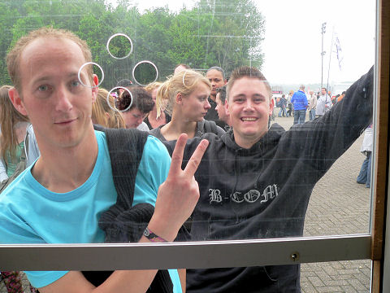
In B-COM sweater gehuld de volgende Rodafan: casual 045.
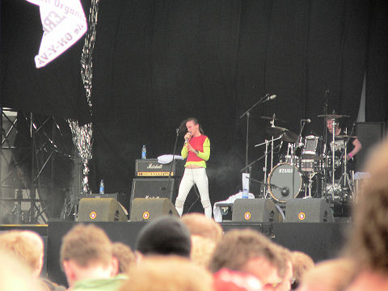
Echt lekker is ze niet, maar wel energiek: Juliette van Juliette and the Licks.
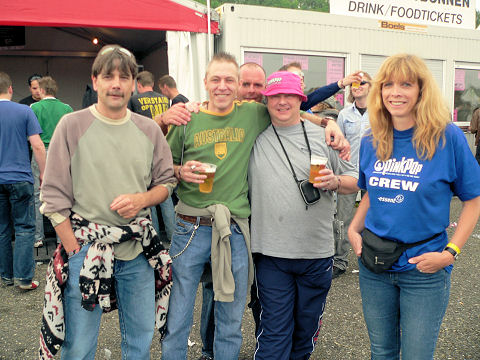
Wie vaker in de Kickoff komt herkent de meneer links op de foto
meteen.
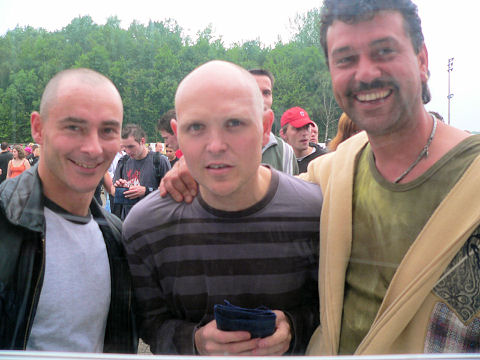
SBC Roland (l) en SBC Jos (r) met in hun midden Dave uit London die binnenkort
naar
Australië gaat emigreren.
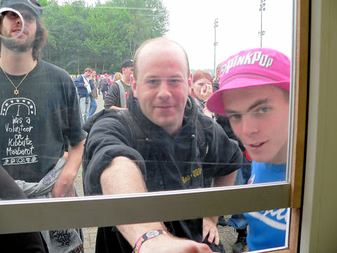
Weer twee Rodafans. Zal het BAM weer lukken om een spraakmakende foto te
schieten op PinkPop?
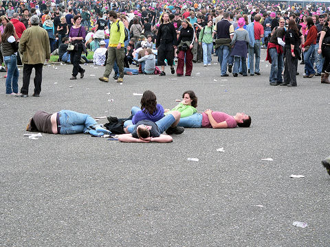
De openingsdag van PinkPop begon onheilspellend grauw, maar gaandeweg de
middag brak de zon zelfs even door.
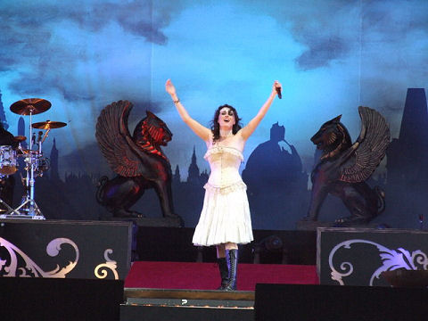
Sprookjesfee Sharon den Adel van Within Temptation. Niet gezien, maar wel
gehoord. En dat was al indrukwekkend zat.
<photo by kind courtesy of B.A.M.>
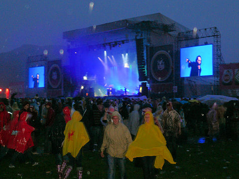
Tegen 21.00 uur breekt de hel alsnog uit. Stevige buien vergezeld van onweer
verjagen een groot deel van het publiek. Het optreden van Marilyn Manson valt
daardoor grotendeels in het water.
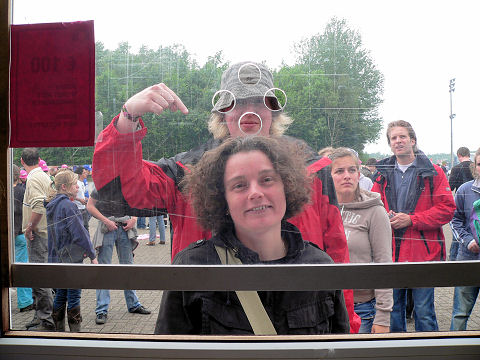
Dag twee begint eveneens enigszins druilerig totdat Danniëlle aan de kassa
verschijnt. Voor haar visie op o.m. voetbal- en muziekzaken kijk hier
>>>
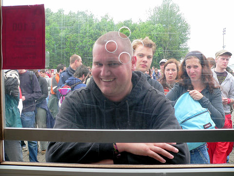
Alweer een Rodasupporter: Wido uit "Zumpelveld".
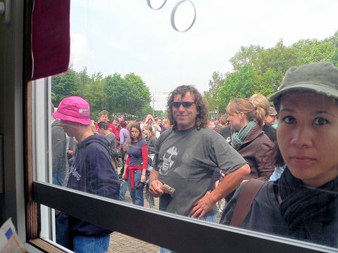
En ook dit jaar ontsnapt Lei niet aan de pers.
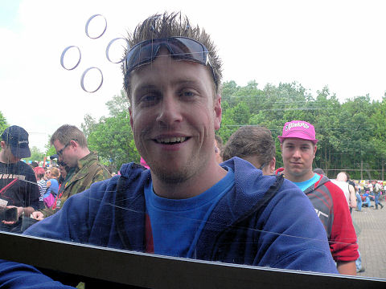
Een ex-FOT-ser uit Boches.
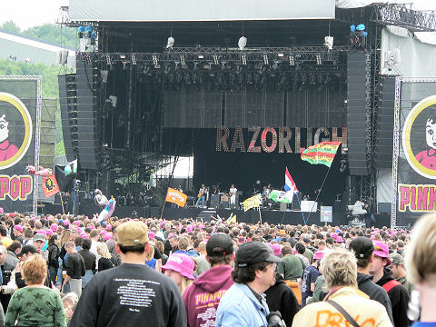
De zon brak zowaar een aantal keren door. Razorlight bleek helaas behangmuziek.
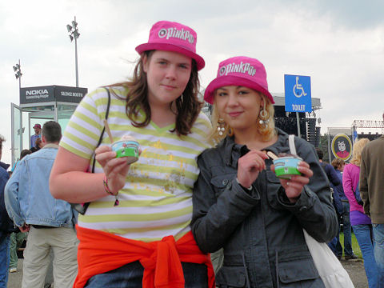
Twee onbekende meisjes die graag op de Koempelsite wilden. Estebleef!
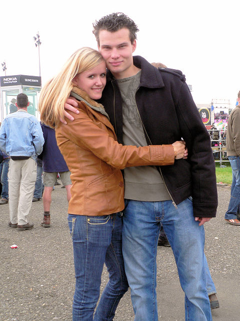
Een oud-BCB leerling met vriendin. Als VVV-supporter beleefde hij vandaag een
extra top-dag!
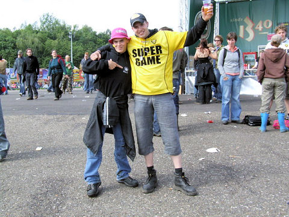
VVV promoveerde zojuist naar de eredivisie. Dat wordt volgend seizoen twee maal
een supergame tegen Roda JC.
<photo by kind courtesy of B.A.M.>
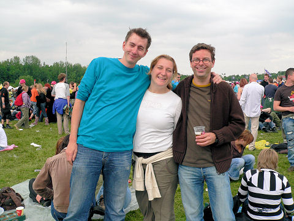
Michel (l) was ook weer present.
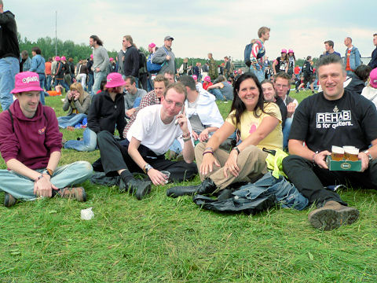
Mark S. gespot naast een leuke dame en een traytje bier.
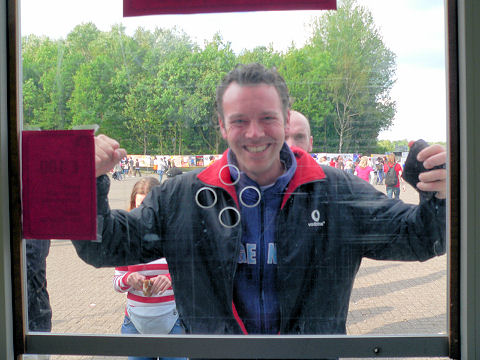
Herr Krastman komt zoals het een echte HBB'er betaamt bierbonnen tanken.
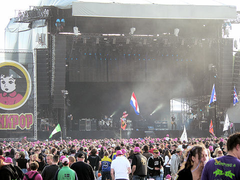
Snow-Patrol: slaapverwekkende behangmuziek.
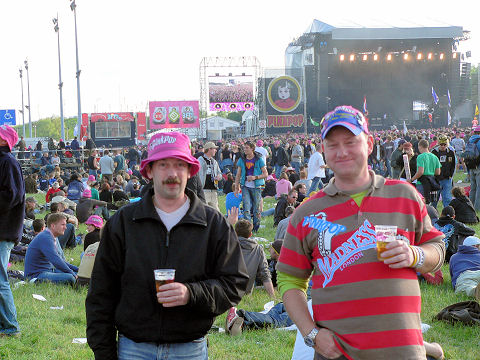
Popeye Theo (r) zat dit jaar met zijn clan aan de andere kant van het terrein.
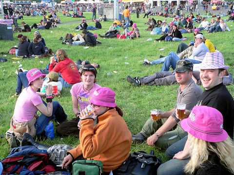
De meneer met het kekke hoedje rechts is het onlosmakelijke deel van...
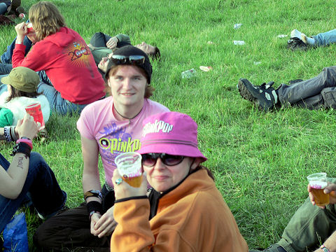
... de mevrouw met het PinkPop hoedje.
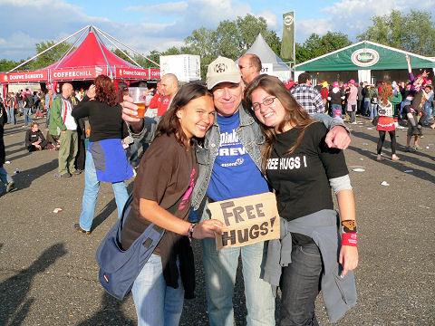
PinkPop kost een aardige cent. Daarom is het fijn dat sommige dingen nog gratis
zijn zoals deze "free hugs".
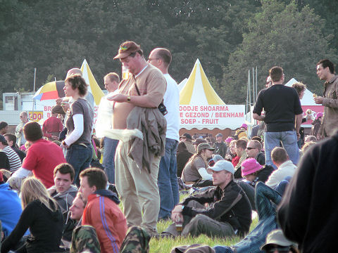
Bube in karakteristieke pose.
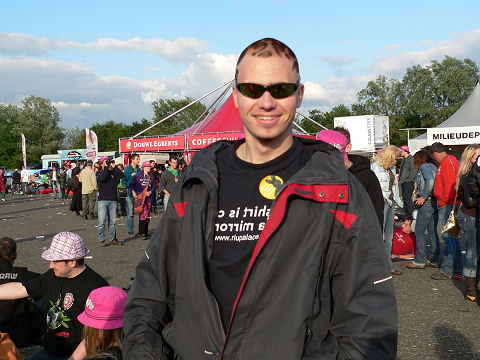
De bijna onherkenbare Kevin H. Deze foto is niet in spiegelbeeld, het shirt wèl.
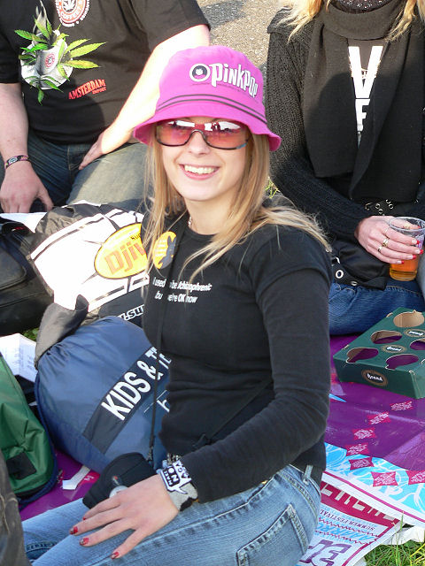
Kevins Rodagirl.
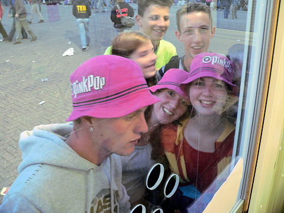
Sommige BCB'ers kom je ook op elk feest tegen...
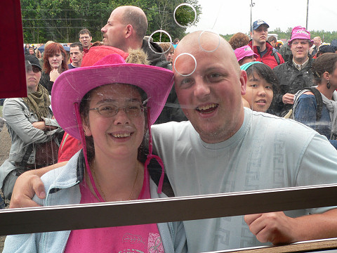
Dag drie begint met een bezoek van deze Rodasupporter.
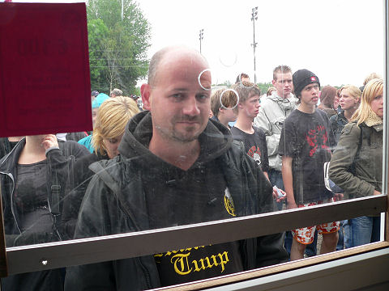
Op de voet gevolgd door HBB Ray.
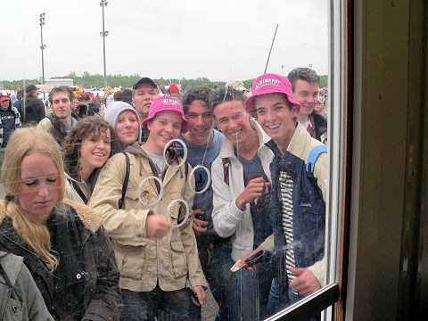
Een zevental BCB'ers die graag meeliften op het succes van Roda.
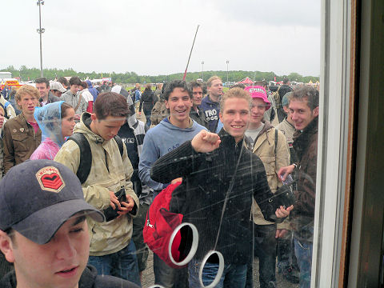
Oeps, een achttal; Menno klopt ook nog even aan.
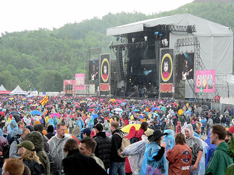
The Fratellis met een mix van folkloristische en feestelijke muziek tijdens de
ochtendlijke regenbuien.
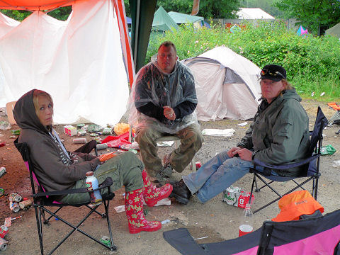
De Brui va Vols liepen niet warm voor de Fratellis omdat ze maar één nummer van
de band kennen. En dat betreffende "Chelsea dagger" was uiteraard het slotnummer
van de act.
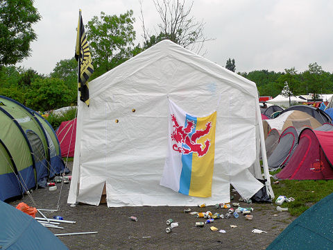
Iets verderop staat een tent met een Rodavaan en een Limburg-vlag. Wie zal deze
zwijnenstal bewonen?
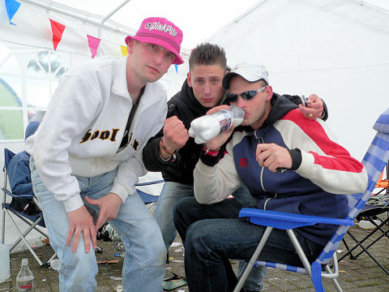
Oei, een aantal casuals. Jammer dat Ramonski er niet was want die had een
biertje toegezegd van een goed merk.
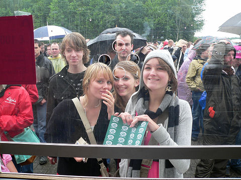
Alweer een stel BCB'ers en wel met versgescoorde brandbierbonnen.
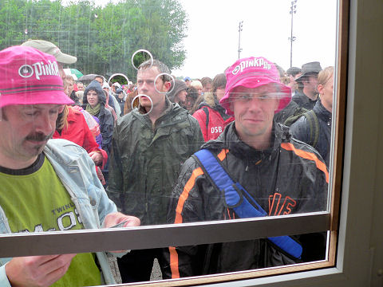
Natuurlijk onze vaste bezoeker. Op deze foto nog niet gaar maar dat zou in de
loop
van de dag veranderen.
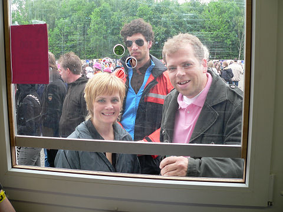
Deze Z16'ers voor het eerst gespot op PinkPop.
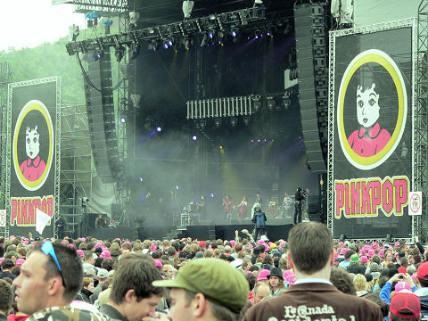
Tijdens het optreden van het kattengejammer van Scissor Sisters gaat het nog
heel
even regenen.
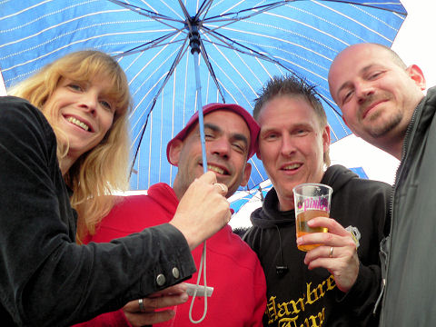
De Hanebretboys worden drooggehouden door Loes.
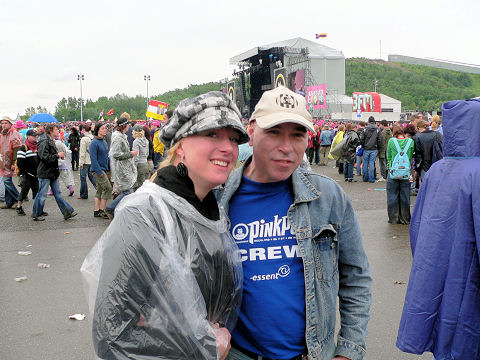
Deze twee moeten morgen naar school. De linkse moet examen Duits doen en de
rechtse niet....
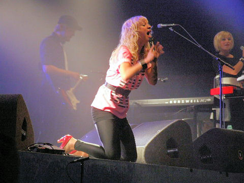
Niet gehoord en niet gezien: Krezip, de invalkracht voor
Amy Winehouse. Het
schijnt
erg
goed geweest te zijn.
<photo by kind courtesy of B.A.M.>
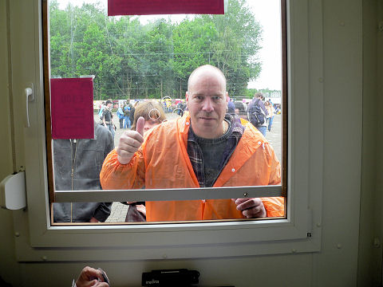
SBC Maurice meldt zich present.
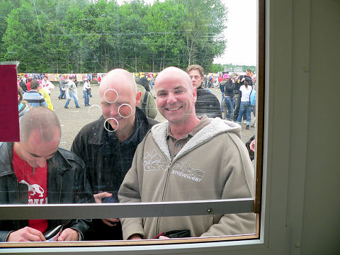
SBC David, geflankeerd door Dave en Roland die in de buidel tast.
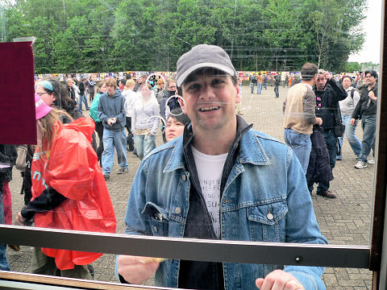
Marcel Michiels is ook heel blij met de promotie van VVV. Deze keer zonder Peg,
maar die is dan ook pas moeder geworden. Proficiat!
Gadget-Joep is de enige met een groen PinkPophoedje. Past goed bij het shirt.
Willen jullie twee Twix?
Tijdens het optreden van Linkin Park....
... worden Mo en Daisy voor de allereerste keer gespot.
Willemijn wil ook twee Twix en daarna naar de Kooks. Helaas loopt ze de
verkeerde
kant op richting Evanescense.
De melodieuze Britpop van de Kooks in een afgeladen volle 3FM tent.
Terwijl de slot-act van de Smashing Pumpkins
nog aan de gang is worden de
traditionele afscheidsvuurtjes ontstoken.
<photo by kind courtesy of B.A.M.> © Koempels Pleasure Dome
|